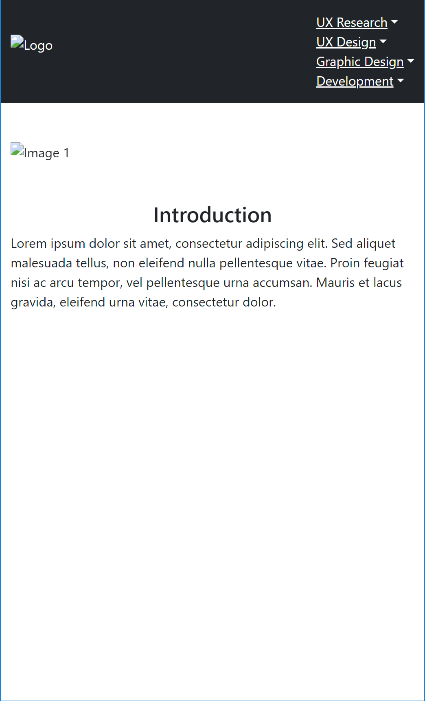
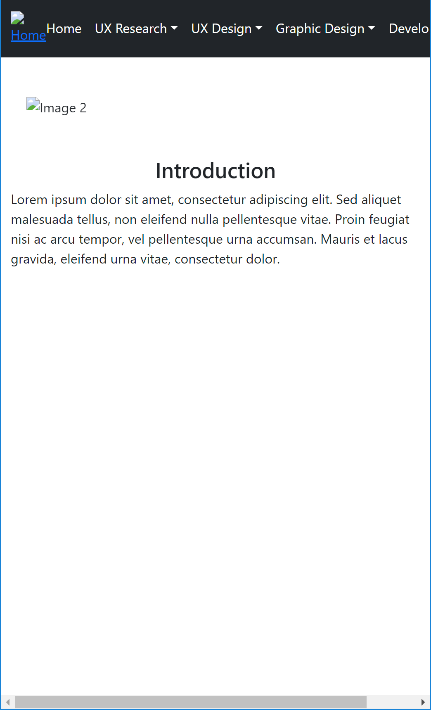
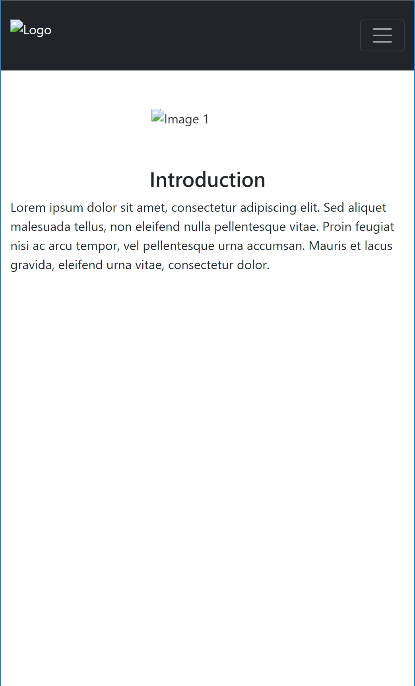
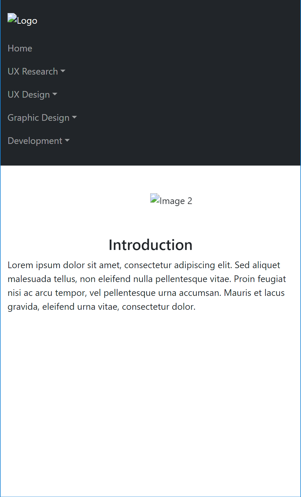
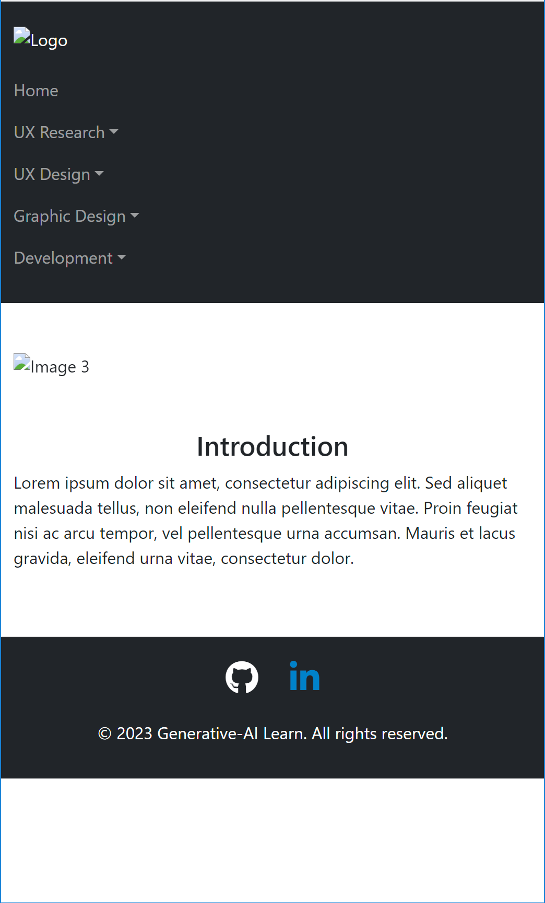

It is possible use natural language interfaces to specify what is required for a given web page layout. This was tested out using ChatGPT only at this point.
The first goal was to create four main areas:
The desire was to make the site "responsive" and hence put in as a requirement to use Bootstrap. As there are restrictions on how up-to-date the language model which is used by ChatGPT, we went with a minimal version of Bootstrap 5.
In all tests it seems best to start with something very simple but very specific. This narrows down the initial possible results.
Some points worth considering when "engineering" a prompt:
Words used in the prompt must be chosen wisely. For example asking for a "collapsible menu" resulted in code where every menu element was collapsed to show nothing.
Even through Bootstrap was used this does not by default end up using the options which make an element responsive. This must be done explicitly. For example, asking for a menu which is "responsive when resizing on different output devices"
The version of Bootstrap (and any other dependencies) used is whatever is known by the model at the time the query is used. This currently ends up using a beta version of Bootstrap 5, which required modifying the version reference afterwards to a stable version. Fortunately the beta and release versions did not have significant changes -- but if they did then the could generated could be outdated and unable to be display. For example trying
to use an older version of Font Awesome resulted in incorrect code being produced and nothing displaying.
Options such as alignment and relative sizing was incrementally added to the prompt and the results were mostly as expected. Some additions to set sizing actually did not work as the code added would not work with the Bootstrap code. In cases like this accessing on-line documentation provided correct answers with faster turn-around time.
Some elements were too large relative to other elements as the content "layout" was not explicitly specified. This was mostly easy to correct by specifying more stringent sizing requirements. In the end, manual editing was still required as the generation is not aware of the content size being referenced. For example the image sizes for the carousel are not known and thus required manually modifying the scaling of the images.
As a general heuristic, it is worthwhile to create different sections one at a time and then ask the AI to put the elements together. When putting them together adding constraints as for positioning, and sizing should be included. Each section must be clearly specified to avoid affecting other areas. For example if two sections have forms then you must be specific as to which element in which form a given attribute should be applied.
This makes it relatively easy to add or remove requirements incrementally.
The "template" for the pages on this site is generated. Tweaks were added to the prompt to make incremental improvements to the structure. The header, image carousel, and main content section were asked for first and then each element was tweaked to adjust the formatting and responsiveness. A footer was added afterwards.
The text below was returned from ChatGPT by prompting for the AI to create the web page. This was done after performing all of the intermediate incremental prompts. This is a very useful capability which allows for prototyping to be performed incrementally and then creating a summarized final prompt from the iterations.
Prompt
You need to create a web page using Bootstrap 5 for a website. The page should have a top horizontal area containing a logo aligned to the left and a collapsible menu aligned to the right. The menu should include the following items: "Home", "UX Research", "UX Design", "Graphic Design", and "Development". Each menu item should have two sub-menu items. Below the top area, there should be an image carousel section with images centered at 50% of the width. Finally, there should be an introduction section with space for text.
Your task is to generate the HTML and CSS code for the web page using Bootstrap 5, following the provided specifications.
Specifications:
Please generate the HTML and CSS code for the web page based on the provided specifications.
Snapshots of the web page resulting from prompt refinements is shown below.
| Goal | Prompt | Result |
|---|
| Create Initial Layout | Generate a web page using bootstrap 5 which has a top horizontal area with an image icon on the left and a menu on the right. The menu contains: "ux research", "ux design", "graphic design", and "development". Add 2 sub-menus under each menu. Under the top area is a image carousel area with images centered at 50% of width. Under that section titled "introduction" with space for text. |  |
| Formatting Refinements | Make the top level menus be horizontal. Remove underlining from top level menus, and slow down the speed of the carousel. Add a "home" menu item as the left-most item in the top menu. Remove underline from "home" menu item |  |
| Responsiveness Refinements | Make top level menu bar collapsible when it no longer fits horizontally |  |
| Responsiveness Refinements | Make the top level menu items right aligned but keep the logo left aligned. |  |
| Footer Addition | dd a footer section with a row for social media icon links for GitHub and LinkedIn and a copyright notice on the next line. |  |